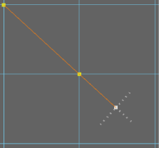
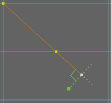
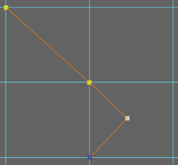
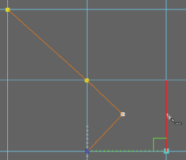

使用多切割工具进行 90 度角切割
使用多切割工具进行 90 度角切割
开始进行切割。请参见
使用多切割工具切割面
。
想要进行 90 度角切割时，请同时按住 Ctrl 和 Shift 键并将光标向上一个切割点移近。
灰色量角器线显示为与上一个分段呈 90 度和 180 度角。

在其中一条量角器线上方移动光标。
在沿量角器线方向移动光标时，将会显示一条绿色切割预览线。

单击网格放置切割点并创建 90 度角切割。

在现有边上查找 90 度角
同时按住 Ctrl 和 Shift 键并在现有边上方移动光标以查找其他 90 度角。

相关主题
多切割工具
使用多切割工具将切割点捕捉到边
使用多切割工具重新定位切割点
使用多切割工具切割面
父主题：
通过多切割工具分割多边形